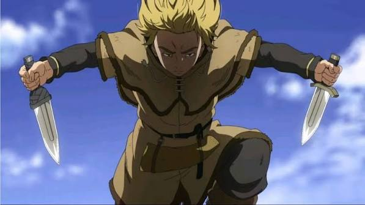

Meu blog tech
Vou compartilhar meu reviw sobre vinland saga

Meu primeiro post
Por: Pedro Portes
Boas-vindas ao meu novo blog! Aqui Vou compartilhar meu reviw sobre vinland saga Vinland Saga é uma das obras mais profundas e marcantes da indústria de mangás e animes modernos. Criada por Makoto Yukimura, a história utiliza o contexto histórico da Europa do século XI — marcada pelas invasões vikings e conflitos pelo trono da Inglaterra — como pano de fundo para desconstruir a glorificação da violência e explorar temas como vingança, trauma e redenção. A jornada de Thorfinn, o protagonista, serve como o principal veículo para essa mensagem. No início, acompanhamos um jovem consumido pelo ódio e pela busca obsessiva por vingança contra Askeladd, o homem que assassinou seu pai. Toda a sua infância e juventude são moldadas pelo campo de batalha, reduzindo sua existência ao bloodshed e ao desejo de dar um fim à sua dor por meio de mais violência. Yukimura entrega cenas de ação impecáveis e dinâmicas, mas nunca perde de vista o peso psicológico e humano de cada espada empunhada. O ponto de virada da obra surge justamente quando essa ilusão desmorona. Ao privar o protagonista de seu único propósito, a narrativa dá um salto de maturidade impressionante ao transicionar para o arco do cultivo, focado no trabalho braçal, no silêncio e no confrontamento das próprias dores. É aqui que Vinland Saga se consolida como uma obra-prima: em vez de recompensar a brutalidade, o enredo força Thorfinn — e o próprio leitor — a encarar os fantasmas do passado e a buscar o caminho árduo da não-violência e da verdadeira reconstrução. Destaques da obra: Desenvolvimento de Personagens: A evolução de Thorfinn e o carisma complexo de figuras como Askeladd e Canute garantem que nenhum personagem seja inteiramente bom ou mau. Animação e Arte: A adaptação pelo estúdio WIT (e posteriormente MAPPA) mantém o nível de detalhamento e a expressividade impressionante do mangá original. Construção Temática: A transição de um épico de ação viking para um estudo profundo sobre o pacifismo e a empatia.